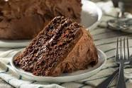

Chocolate Cake Recipe

Description
A rich and decadent chocolate cake that will satisfy your sweet tooth.
Ingredients
- 2 cups all-purpose flour
- 1 3/4 cups granulated sugar
- 3/4 cup unsweetened cocoa powder
- 1 1/2 teaspoons baking powder
- 1 1/2 teaspoons baking soda
- 1 teaspoon salt
- 2 large eggs
- 1 cup milk
- 1/2 cup vegetable oil
- 2 teaspoons vanilla extract
- 1 cup boiling water
Steps
- Preheat the oven to 350°F (175°C). Grease and flour two 9-inch round cake pans.
- In a large mixing bowl, sift together flour, sugar, cocoa powder, baking powder, baking soda, and salt.
- Add eggs, milk, vegetable oil, and vanilla extract to the dry ingredients. Mix well until the batter is smooth and well combined.
- Stir in the boiling water gradually, starting with a small amount and gradually increasing. The batter will be thin, but that's okay.
- Pour the batter evenly into the prepared cake pans.
- Bake in the preheated oven for 30 to 35 minutes, or until a toothpick inserted into the center of the cakes comes out clean.
- Remove the cakes from the oven and let them cool in the pans for 10 minutes. Then transfer them to a wire rack to cool completely.
- Once the cakes are completely cooled, you can frost and decorate them as desired.
- Slice and serve this delicious chocolate cake!
go back